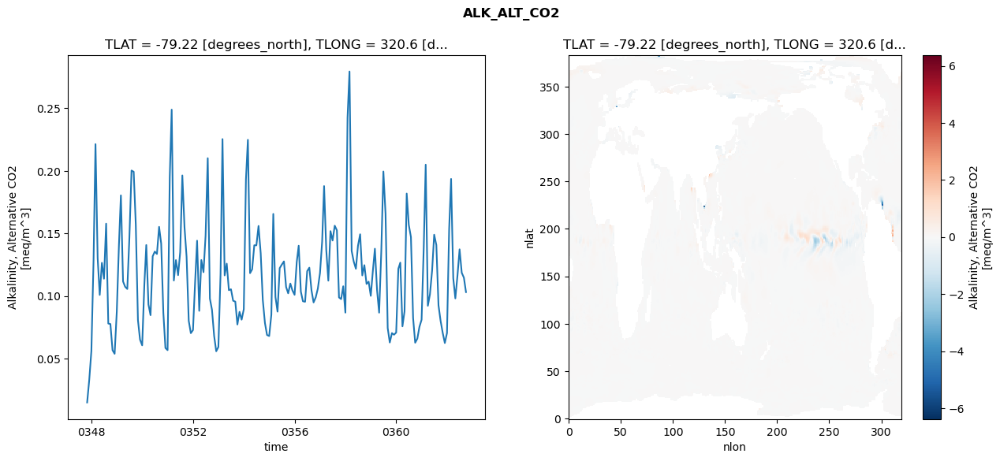
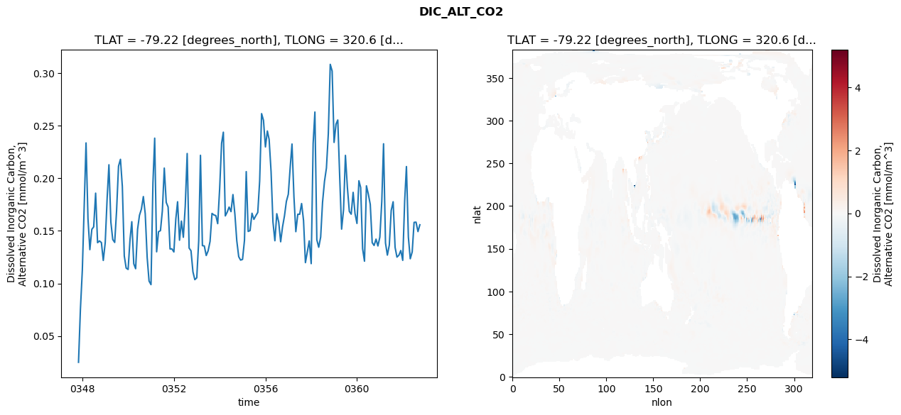
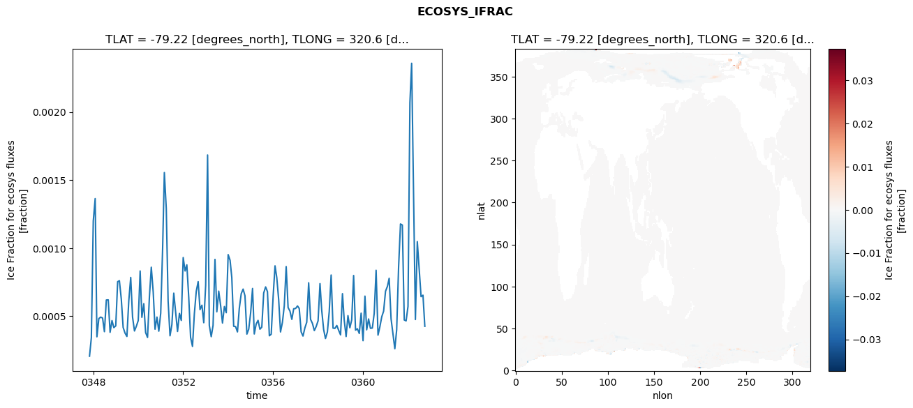
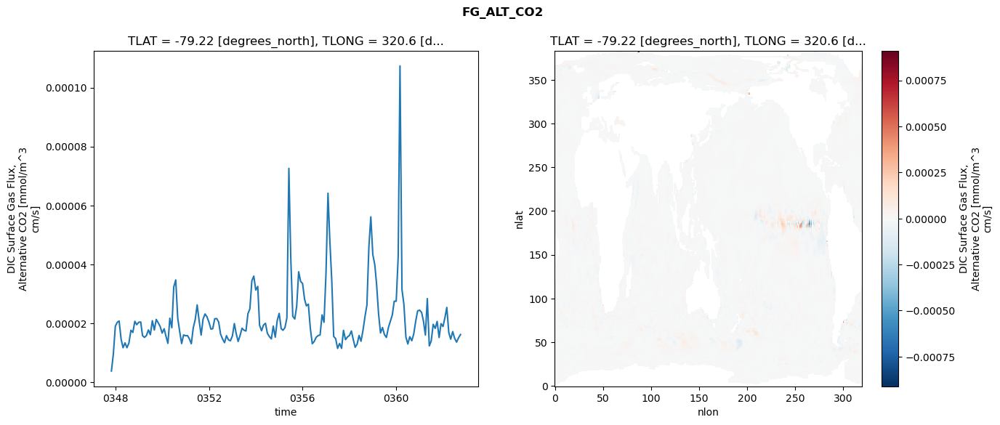

glb-dor_North_Atlantic_basin_013_1999-10-01_00055#
Simulation details#
Case: smyle.cdr-atlas-v0.glb-dor_North_Atlantic_basin_013_1999-10-01_00055.001
Basin: North_Atlantic_basin
Polygon: 13.0
Start date: 1999-10
Show code cell source Hide code cell source
import xarray as xr
import matplotlib.pyplot as plt
Show code cell source Hide code cell source
zarr_store = "/path/to/zarr/store"
# Parameters
zarr_store = "/global/cfs/projectdirs/m4746/Projects/Ocean-CDR-Atlas-v0/data/validation/smyle.cdr-atlas-v0.glb-dor_North_Atlantic_basin_013_1999-10-01_00055.001.validation.zarr"
Show code cell source Hide code cell source
%%time
ds_o = xr.open_zarr(zarr_store).compute()
ds_o
CPU times: user 681 ms, sys: 455 ms, total: 1.14 s
Wall time: 1.31 s
<xarray.Dataset> Size: 2MB
Dimensions: (nlat: 384, nlon: 320, time: 180)
Coordinates:
TLAT float64 8B -79.22
TLONG float64 8B 320.6
ULAT float64 8B -78.95
ULONG float64 8B 321.1
* time (time) object 1kB 0347-11-01 00:00:00 ... 0362-10-01 0...
z_t float32 4B 500.0
Dimensions without coordinates: nlat, nlon
Data variables:
ALK_ALT_CO2_diff (nlat, nlon) float32 492kB nan nan nan ... nan nan nan
ALK_ALT_CO2_rmse (time) float64 1kB 0.01489 0.03283 ... 0.1146 0.1031
DIC_ALT_CO2_diff (nlat, nlon) float32 492kB nan nan nan ... nan nan nan
DIC_ALT_CO2_rmse (time) float64 1kB 0.02503 0.07509 ... 0.1493 0.1558
ECOSYS_IFRAC_diff (nlat, nlon) float32 492kB nan nan nan ... nan nan nan
ECOSYS_IFRAC_rmse (time) float64 1kB 0.0002061 0.000343 ... 0.0004255
FG_ALT_CO2_diff (nlat, nlon) float32 492kB nan nan nan ... nan nan nan
FG_ALT_CO2_rmse (time) float64 1kB 3.801e-06 9.571e-06 ... 1.62e-05xarray.Dataset
- nlat: 384
- nlon: 320
- time: 180
- TLAT()float64-79.22
- long_name :
- array of t-grid latitudes
- units :
- degrees_north
array(-79.22052261)
- TLONG()float64320.6
- long_name :
- array of t-grid longitudes
- units :
- degrees_east
array(320.56250892)
- ULAT()float64-78.95
- long_name :
- array of u-grid latitudes
- units :
- degrees_north
array(-78.95289509)
- ULONG()float64321.1
- long_name :
- array of u-grid longitudes
- units :
- degrees_east
array(321.12500894)
- time(time)object0347-11-01 00:00:00 ... 0362-10-...
- bounds :
- time_bound
- long_name :
- time
array([cftime.DatetimeNoLeap(347, 11, 1, 0, 0, 0, 0, has_year_zero=True), cftime.DatetimeNoLeap(347, 12, 1, 0, 0, 0, 0, has_year_zero=True), cftime.DatetimeNoLeap(348, 1, 1, 0, 0, 0, 0, has_year_zero=True), cftime.DatetimeNoLeap(348, 2, 1, 0, 0, 0, 0, has_year_zero=True), cftime.DatetimeNoLeap(348, 3, 1, 0, 0, 0, 0, has_year_zero=True), cftime.DatetimeNoLeap(348, 4, 1, 0, 0, 0, 0, has_year_zero=True), cftime.DatetimeNoLeap(348, 5, 1, 0, 0, 0, 0, has_year_zero=True), cftime.DatetimeNoLeap(348, 6, 1, 0, 0, 0, 0, has_year_zero=True), cftime.DatetimeNoLeap(348, 7, 1, 0, 0, 0, 0, has_year_zero=True), cftime.DatetimeNoLeap(348, 8, 1, 0, 0, 0, 0, has_year_zero=True), cftime.DatetimeNoLeap(348, 9, 1, 0, 0, 0, 0, has_year_zero=True), cftime.DatetimeNoLeap(348, 10, 1, 0, 0, 0, 0, has_year_zero=True), cftime.DatetimeNoLeap(348, 11, 1, 0, 0, 0, 0, has_year_zero=True), cftime.DatetimeNoLeap(348, 12, 1, 0, 0, 0, 0, has_year_zero=True), cftime.DatetimeNoLeap(349, 1, 1, 0, 0, 0, 0, has_year_zero=True), cftime.DatetimeNoLeap(349, 2, 1, 0, 0, 0, 0, has_year_zero=True), cftime.DatetimeNoLeap(349, 3, 1, 0, 0, 0, 0, has_year_zero=True), cftime.DatetimeNoLeap(349, 4, 1, 0, 0, 0, 0, has_year_zero=True), cftime.DatetimeNoLeap(349, 5, 1, 0, 0, 0, 0, has_year_zero=True), cftime.DatetimeNoLeap(349, 6, 1, 0, 0, 0, 0, has_year_zero=True), cftime.DatetimeNoLeap(349, 7, 1, 0, 0, 0, 0, has_year_zero=True), cftime.DatetimeNoLeap(349, 8, 1, 0, 0, 0, 0, has_year_zero=True), cftime.DatetimeNoLeap(349, 9, 1, 0, 0, 0, 0, has_year_zero=True), cftime.DatetimeNoLeap(349, 10, 1, 0, 0, 0, 0, has_year_zero=True), cftime.DatetimeNoLeap(349, 11, 1, 0, 0, 0, 0, has_year_zero=True), cftime.DatetimeNoLeap(349, 12, 1, 0, 0, 0, 0, has_year_zero=True), cftime.DatetimeNoLeap(350, 1, 1, 0, 0, 0, 0, has_year_zero=True), cftime.DatetimeNoLeap(350, 2, 1, 0, 0, 0, 0, has_year_zero=True), cftime.DatetimeNoLeap(350, 3, 1, 0, 0, 0, 0, has_year_zero=True), cftime.DatetimeNoLeap(350, 4, 1, 0, 0, 0, 0, has_year_zero=True), cftime.DatetimeNoLeap(350, 5, 1, 0, 0, 0, 0, has_year_zero=True), cftime.DatetimeNoLeap(350, 6, 1, 0, 0, 0, 0, has_year_zero=True), cftime.DatetimeNoLeap(350, 7, 1, 0, 0, 0, 0, has_year_zero=True), cftime.DatetimeNoLeap(350, 8, 1, 0, 0, 0, 0, has_year_zero=True), cftime.DatetimeNoLeap(350, 9, 1, 0, 0, 0, 0, has_year_zero=True), cftime.DatetimeNoLeap(350, 10, 1, 0, 0, 0, 0, has_year_zero=True), cftime.DatetimeNoLeap(350, 11, 1, 0, 0, 0, 0, has_year_zero=True), cftime.DatetimeNoLeap(350, 12, 1, 0, 0, 0, 0, has_year_zero=True), cftime.DatetimeNoLeap(351, 1, 1, 0, 0, 0, 0, has_year_zero=True), cftime.DatetimeNoLeap(351, 2, 1, 0, 0, 0, 0, has_year_zero=True), cftime.DatetimeNoLeap(351, 3, 1, 0, 0, 0, 0, has_year_zero=True), cftime.DatetimeNoLeap(351, 4, 1, 0, 0, 0, 0, has_year_zero=True), cftime.DatetimeNoLeap(351, 5, 1, 0, 0, 0, 0, has_year_zero=True), cftime.DatetimeNoLeap(351, 6, 1, 0, 0, 0, 0, has_year_zero=True), cftime.DatetimeNoLeap(351, 7, 1, 0, 0, 0, 0, has_year_zero=True), cftime.DatetimeNoLeap(351, 8, 1, 0, 0, 0, 0, has_year_zero=True), cftime.DatetimeNoLeap(351, 9, 1, 0, 0, 0, 0, has_year_zero=True), cftime.DatetimeNoLeap(351, 10, 1, 0, 0, 0, 0, has_year_zero=True), cftime.DatetimeNoLeap(351, 11, 1, 0, 0, 0, 0, has_year_zero=True), cftime.DatetimeNoLeap(351, 12, 1, 0, 0, 0, 0, has_year_zero=True), cftime.DatetimeNoLeap(352, 1, 1, 0, 0, 0, 0, has_year_zero=True), cftime.DatetimeNoLeap(352, 2, 1, 0, 0, 0, 0, has_year_zero=True), cftime.DatetimeNoLeap(352, 3, 1, 0, 0, 0, 0, has_year_zero=True), cftime.DatetimeNoLeap(352, 4, 1, 0, 0, 0, 0, has_year_zero=True), cftime.DatetimeNoLeap(352, 5, 1, 0, 0, 0, 0, has_year_zero=True), cftime.DatetimeNoLeap(352, 6, 1, 0, 0, 0, 0, has_year_zero=True), cftime.DatetimeNoLeap(352, 7, 1, 0, 0, 0, 0, has_year_zero=True), cftime.DatetimeNoLeap(352, 8, 1, 0, 0, 0, 0, has_year_zero=True), cftime.DatetimeNoLeap(352, 9, 1, 0, 0, 0, 0, has_year_zero=True), cftime.DatetimeNoLeap(352, 10, 1, 0, 0, 0, 0, has_year_zero=True), cftime.DatetimeNoLeap(352, 11, 1, 0, 0, 0, 0, has_year_zero=True), cftime.DatetimeNoLeap(352, 12, 1, 0, 0, 0, 0, has_year_zero=True), cftime.DatetimeNoLeap(353, 1, 1, 0, 0, 0, 0, has_year_zero=True), cftime.DatetimeNoLeap(353, 2, 1, 0, 0, 0, 0, has_year_zero=True), cftime.DatetimeNoLeap(353, 3, 1, 0, 0, 0, 0, has_year_zero=True), cftime.DatetimeNoLeap(353, 4, 1, 0, 0, 0, 0, has_year_zero=True), cftime.DatetimeNoLeap(353, 5, 1, 0, 0, 0, 0, has_year_zero=True), cftime.DatetimeNoLeap(353, 6, 1, 0, 0, 0, 0, has_year_zero=True), cftime.DatetimeNoLeap(353, 7, 1, 0, 0, 0, 0, has_year_zero=True), cftime.DatetimeNoLeap(353, 8, 1, 0, 0, 0, 0, has_year_zero=True), cftime.DatetimeNoLeap(353, 9, 1, 0, 0, 0, 0, has_year_zero=True), cftime.DatetimeNoLeap(353, 10, 1, 0, 0, 0, 0, has_year_zero=True), cftime.DatetimeNoLeap(353, 11, 1, 0, 0, 0, 0, has_year_zero=True), cftime.DatetimeNoLeap(353, 12, 1, 0, 0, 0, 0, has_year_zero=True), cftime.DatetimeNoLeap(354, 1, 1, 0, 0, 0, 0, has_year_zero=True), cftime.DatetimeNoLeap(354, 2, 1, 0, 0, 0, 0, has_year_zero=True), cftime.DatetimeNoLeap(354, 3, 1, 0, 0, 0, 0, has_year_zero=True), cftime.DatetimeNoLeap(354, 4, 1, 0, 0, 0, 0, has_year_zero=True), cftime.DatetimeNoLeap(354, 5, 1, 0, 0, 0, 0, has_year_zero=True), cftime.DatetimeNoLeap(354, 6, 1, 0, 0, 0, 0, has_year_zero=True), cftime.DatetimeNoLeap(354, 7, 1, 0, 0, 0, 0, has_year_zero=True), cftime.DatetimeNoLeap(354, 8, 1, 0, 0, 0, 0, has_year_zero=True), cftime.DatetimeNoLeap(354, 9, 1, 0, 0, 0, 0, has_year_zero=True), cftime.DatetimeNoLeap(354, 10, 1, 0, 0, 0, 0, has_year_zero=True), cftime.DatetimeNoLeap(354, 11, 1, 0, 0, 0, 0, has_year_zero=True), cftime.DatetimeNoLeap(354, 12, 1, 0, 0, 0, 0, has_year_zero=True), cftime.DatetimeNoLeap(355, 1, 1, 0, 0, 0, 0, has_year_zero=True), cftime.DatetimeNoLeap(355, 2, 1, 0, 0, 0, 0, has_year_zero=True), cftime.DatetimeNoLeap(355, 3, 1, 0, 0, 0, 0, has_year_zero=True), cftime.DatetimeNoLeap(355, 4, 1, 0, 0, 0, 0, has_year_zero=True), cftime.DatetimeNoLeap(355, 5, 1, 0, 0, 0, 0, has_year_zero=True), cftime.DatetimeNoLeap(355, 6, 1, 0, 0, 0, 0, has_year_zero=True), cftime.DatetimeNoLeap(355, 7, 1, 0, 0, 0, 0, has_year_zero=True), cftime.DatetimeNoLeap(355, 8, 1, 0, 0, 0, 0, has_year_zero=True), cftime.DatetimeNoLeap(355, 9, 1, 0, 0, 0, 0, has_year_zero=True), cftime.DatetimeNoLeap(355, 10, 1, 0, 0, 0, 0, has_year_zero=True), cftime.DatetimeNoLeap(355, 11, 1, 0, 0, 0, 0, has_year_zero=True), cftime.DatetimeNoLeap(355, 12, 1, 0, 0, 0, 0, has_year_zero=True), cftime.DatetimeNoLeap(356, 1, 1, 0, 0, 0, 0, has_year_zero=True), cftime.DatetimeNoLeap(356, 2, 1, 0, 0, 0, 0, has_year_zero=True), cftime.DatetimeNoLeap(356, 3, 1, 0, 0, 0, 0, has_year_zero=True), cftime.DatetimeNoLeap(356, 4, 1, 0, 0, 0, 0, has_year_zero=True), cftime.DatetimeNoLeap(356, 5, 1, 0, 0, 0, 0, has_year_zero=True), cftime.DatetimeNoLeap(356, 6, 1, 0, 0, 0, 0, has_year_zero=True), cftime.DatetimeNoLeap(356, 7, 1, 0, 0, 0, 0, has_year_zero=True), cftime.DatetimeNoLeap(356, 8, 1, 0, 0, 0, 0, has_year_zero=True), cftime.DatetimeNoLeap(356, 9, 1, 0, 0, 0, 0, has_year_zero=True), cftime.DatetimeNoLeap(356, 10, 1, 0, 0, 0, 0, has_year_zero=True), cftime.DatetimeNoLeap(356, 11, 1, 0, 0, 0, 0, has_year_zero=True), cftime.DatetimeNoLeap(356, 12, 1, 0, 0, 0, 0, has_year_zero=True), cftime.DatetimeNoLeap(357, 1, 1, 0, 0, 0, 0, has_year_zero=True), cftime.DatetimeNoLeap(357, 2, 1, 0, 0, 0, 0, has_year_zero=True), cftime.DatetimeNoLeap(357, 3, 1, 0, 0, 0, 0, has_year_zero=True), cftime.DatetimeNoLeap(357, 4, 1, 0, 0, 0, 0, has_year_zero=True), cftime.DatetimeNoLeap(357, 5, 1, 0, 0, 0, 0, has_year_zero=True), cftime.DatetimeNoLeap(357, 6, 1, 0, 0, 0, 0, has_year_zero=True), cftime.DatetimeNoLeap(357, 7, 1, 0, 0, 0, 0, has_year_zero=True), cftime.DatetimeNoLeap(357, 8, 1, 0, 0, 0, 0, has_year_zero=True), cftime.DatetimeNoLeap(357, 9, 1, 0, 0, 0, 0, has_year_zero=True), cftime.DatetimeNoLeap(357, 10, 1, 0, 0, 0, 0, has_year_zero=True), cftime.DatetimeNoLeap(357, 11, 1, 0, 0, 0, 0, has_year_zero=True), cftime.DatetimeNoLeap(357, 12, 1, 0, 0, 0, 0, has_year_zero=True), cftime.DatetimeNoLeap(358, 1, 1, 0, 0, 0, 0, has_year_zero=True), cftime.DatetimeNoLeap(358, 2, 1, 0, 0, 0, 0, has_year_zero=True), cftime.DatetimeNoLeap(358, 3, 1, 0, 0, 0, 0, has_year_zero=True), cftime.DatetimeNoLeap(358, 4, 1, 0, 0, 0, 0, has_year_zero=True), cftime.DatetimeNoLeap(358, 5, 1, 0, 0, 0, 0, has_year_zero=True), cftime.DatetimeNoLeap(358, 6, 1, 0, 0, 0, 0, has_year_zero=True), cftime.DatetimeNoLeap(358, 7, 1, 0, 0, 0, 0, has_year_zero=True), cftime.DatetimeNoLeap(358, 8, 1, 0, 0, 0, 0, has_year_zero=True), cftime.DatetimeNoLeap(358, 9, 1, 0, 0, 0, 0, has_year_zero=True), cftime.DatetimeNoLeap(358, 10, 1, 0, 0, 0, 0, has_year_zero=True), cftime.DatetimeNoLeap(358, 11, 1, 0, 0, 0, 0, has_year_zero=True), cftime.DatetimeNoLeap(358, 12, 1, 0, 0, 0, 0, has_year_zero=True), cftime.DatetimeNoLeap(359, 1, 1, 0, 0, 0, 0, has_year_zero=True), cftime.DatetimeNoLeap(359, 2, 1, 0, 0, 0, 0, has_year_zero=True), cftime.DatetimeNoLeap(359, 3, 1, 0, 0, 0, 0, has_year_zero=True), cftime.DatetimeNoLeap(359, 4, 1, 0, 0, 0, 0, has_year_zero=True), cftime.DatetimeNoLeap(359, 5, 1, 0, 0, 0, 0, has_year_zero=True), cftime.DatetimeNoLeap(359, 6, 1, 0, 0, 0, 0, has_year_zero=True), cftime.DatetimeNoLeap(359, 7, 1, 0, 0, 0, 0, has_year_zero=True), cftime.DatetimeNoLeap(359, 8, 1, 0, 0, 0, 0, has_year_zero=True), cftime.DatetimeNoLeap(359, 9, 1, 0, 0, 0, 0, has_year_zero=True), cftime.DatetimeNoLeap(359, 10, 1, 0, 0, 0, 0, has_year_zero=True), cftime.DatetimeNoLeap(359, 11, 1, 0, 0, 0, 0, has_year_zero=True), cftime.DatetimeNoLeap(359, 12, 1, 0, 0, 0, 0, has_year_zero=True), cftime.DatetimeNoLeap(360, 1, 1, 0, 0, 0, 0, has_year_zero=True), cftime.DatetimeNoLeap(360, 2, 1, 0, 0, 0, 0, has_year_zero=True), cftime.DatetimeNoLeap(360, 3, 1, 0, 0, 0, 0, has_year_zero=True), cftime.DatetimeNoLeap(360, 4, 1, 0, 0, 0, 0, has_year_zero=True), cftime.DatetimeNoLeap(360, 5, 1, 0, 0, 0, 0, has_year_zero=True), cftime.DatetimeNoLeap(360, 6, 1, 0, 0, 0, 0, has_year_zero=True), cftime.DatetimeNoLeap(360, 7, 1, 0, 0, 0, 0, has_year_zero=True), cftime.DatetimeNoLeap(360, 8, 1, 0, 0, 0, 0, has_year_zero=True), cftime.DatetimeNoLeap(360, 9, 1, 0, 0, 0, 0, has_year_zero=True), cftime.DatetimeNoLeap(360, 10, 1, 0, 0, 0, 0, has_year_zero=True), cftime.DatetimeNoLeap(360, 11, 1, 0, 0, 0, 0, has_year_zero=True), cftime.DatetimeNoLeap(360, 12, 1, 0, 0, 0, 0, has_year_zero=True), cftime.DatetimeNoLeap(361, 1, 1, 0, 0, 0, 0, has_year_zero=True), cftime.DatetimeNoLeap(361, 2, 1, 0, 0, 0, 0, has_year_zero=True), cftime.DatetimeNoLeap(361, 3, 1, 0, 0, 0, 0, has_year_zero=True), cftime.DatetimeNoLeap(361, 4, 1, 0, 0, 0, 0, has_year_zero=True), cftime.DatetimeNoLeap(361, 5, 1, 0, 0, 0, 0, has_year_zero=True), cftime.DatetimeNoLeap(361, 6, 1, 0, 0, 0, 0, has_year_zero=True), cftime.DatetimeNoLeap(361, 7, 1, 0, 0, 0, 0, has_year_zero=True), cftime.DatetimeNoLeap(361, 8, 1, 0, 0, 0, 0, has_year_zero=True), cftime.DatetimeNoLeap(361, 9, 1, 0, 0, 0, 0, has_year_zero=True), cftime.DatetimeNoLeap(361, 10, 1, 0, 0, 0, 0, has_year_zero=True), cftime.DatetimeNoLeap(361, 11, 1, 0, 0, 0, 0, has_year_zero=True), cftime.DatetimeNoLeap(361, 12, 1, 0, 0, 0, 0, has_year_zero=True), cftime.DatetimeNoLeap(362, 1, 1, 0, 0, 0, 0, has_year_zero=True), cftime.DatetimeNoLeap(362, 2, 1, 0, 0, 0, 0, has_year_zero=True), cftime.DatetimeNoLeap(362, 3, 1, 0, 0, 0, 0, has_year_zero=True), cftime.DatetimeNoLeap(362, 4, 1, 0, 0, 0, 0, has_year_zero=True), cftime.DatetimeNoLeap(362, 5, 1, 0, 0, 0, 0, has_year_zero=True), cftime.DatetimeNoLeap(362, 6, 1, 0, 0, 0, 0, has_year_zero=True), cftime.DatetimeNoLeap(362, 7, 1, 0, 0, 0, 0, has_year_zero=True), cftime.DatetimeNoLeap(362, 8, 1, 0, 0, 0, 0, has_year_zero=True), cftime.DatetimeNoLeap(362, 9, 1, 0, 0, 0, 0, has_year_zero=True), cftime.DatetimeNoLeap(362, 10, 1, 0, 0, 0, 0, has_year_zero=True)], dtype=object) - z_t()float32500.0
- long_name :
- depth from surface to midpoint of layer
- positive :
- down
- units :
- centimeters
- valid_max :
- 537500.0
- valid_min :
- 500.0
array(500., dtype=float32)
- ALK_ALT_CO2_diff(nlat, nlon)float32nan nan nan nan ... nan nan nan nan
- cell_methods :
- time: mean
- grid_loc :
- 3111
- long_name :
- Alkalinity, Alternative CO2
- units :
- meq/m^3
array([[ nan, nan, nan, ..., nan, nan, nan], [ nan, nan, nan, ..., nan, nan, nan], [0.02392578, 0.00610352, 0.01000977, ..., nan, nan, nan], ..., [ nan, nan, nan, ..., nan, nan, nan], [ nan, nan, nan, ..., nan, nan, nan], [ nan, nan, nan, ..., nan, nan, nan]], dtype=float32) - ALK_ALT_CO2_rmse(time)float640.01489 0.03283 ... 0.1146 0.1031
- cell_methods :
- time: mean
- grid_loc :
- 3111
- long_name :
- Alkalinity, Alternative CO2
- units :
- meq/m^3
array([0.0148871 , 0.03283214, 0.05615032, 0.12841562, 0.22133077, 0.13021479, 0.10082985, 0.12648233, 0.11379566, 0.15779388, 0.07796158, 0.07757372, 0.05664773, 0.05378133, 0.08747935, 0.14097292, 0.18039679, 0.11162641, 0.10735376, 0.10558096, 0.14650198, 0.20024558, 0.19924756, 0.1570885 , 0.08075115, 0.0650973 , 0.06051485, 0.10893853, 0.14072677, 0.09317064, 0.08466682, 0.13170362, 0.13546975, 0.1335509 , 0.15523398, 0.14192434, 0.08661573, 0.05844719, 0.05668633, 0.1950167 , 0.24890296, 0.11234648, 0.12866663, 0.11663006, 0.1350044 , 0.19633216, 0.15511432, 0.13132024, 0.08015069, 0.07026268, 0.07275755, 0.11148994, 0.14417481, 0.08810658, 0.1287121 , 0.11901084, 0.14817955, 0.21010371, 0.09788829, 0.0889547 , 0.0680681 , 0.05580321, 0.05925313, 0.11748195, 0.22538618, 0.11644471, 0.12582861, 0.10464105, 0.10535141, 0.09618822, 0.09547818, 0.07720594, 0.08735127, 0.08106263, 0.08937616, 0.1932465 , 0.2247979 , 0.11821128, 0.12127963, 0.14052239, 0.14045509, 0.15595013, 0.13420312, 0.09691364, 0.07837323, 0.06880747, 0.06799581, 0.08498797, 0.16557636, 0.09917352, 0.08748124, 0.12221713, 0.12502699, 0.12763763, 0.10717548, 0.10210068, 0.10992837, 0.10442604, 0.10091634, 0.12714403, 0.14016186, 0.10348948, 0.09577051, 0.09537172, 0.1198237 , 0.12261695, 0.10448772, 0.09483139, 0.09892057, 0.10586277, 0.11833572, 0.14346315, 0.1878141 , 0.13696426, 0.1122397 , 0.15180886, 0.14430256, 0.15616887, 0.15245514, 0.09880165, 0.09750299, 0.1077485 , 0.08669214, 0.24261391, 0.27939028, 0.13601448, 0.12748933, 0.121726 , 0.14016345, 0.14928777, 0.1164118 , 0.12461673, 0.10958944, 0.11143188, 0.10009887, 0.12084573, 0.13776468, 0.10458513, 0.08666112, 0.13581495, 0.19947594, 0.16565035, 0.0743828 , 0.06279006, 0.07032806, 0.06902756, 0.0707732 , 0.12172894, 0.12665507, 0.07573255, 0.08772314, 0.18183688, 0.1568562 , 0.1470689 , 0.08241303, 0.06263654, 0.06592942, 0.07528574, 0.08101741, 0.13889224, 0.20493969, 0.0921632 , 0.10128348, 0.12022375, 0.14895837, 0.14072031, 0.09256016, 0.08012017, 0.07042 , 0.06237977, 0.07038341, 0.15333679, 0.1935334 , 0.11421014, 0.09804535, 0.11654153, 0.13726513, 0.11852663, 0.11462314, 0.10308847]) - DIC_ALT_CO2_diff(nlat, nlon)float32nan nan nan nan ... nan nan nan nan
- cell_methods :
- time: mean
- grid_loc :
- 3111
- long_name :
- Dissolved Inorganic Carbon, Alternative CO2
- units :
- mmol/m^3
array([[ nan, nan, nan, ..., nan, nan, nan], [ nan, nan, nan, ..., nan, nan, nan], [ 0.01147461, -0.00195312, -0.00073242, ..., nan, nan, nan], ..., [ nan, nan, nan, ..., nan, nan, nan], [ nan, nan, nan, ..., nan, nan, nan], [ nan, nan, nan, ..., nan, nan, nan]], dtype=float32) - DIC_ALT_CO2_rmse(time)float640.02503 0.07509 ... 0.1493 0.1558
- cell_methods :
- time: mean
- grid_loc :
- 3111
- long_name :
- Dissolved Inorganic Carbon, Alternative CO2
- units :
- mmol/m^3
array([0.02502714, 0.07509173, 0.11282241, 0.17696554, 0.23361957, 0.16151765, 0.13216091, 0.15140999, 0.15381836, 0.18585502, 0.13878015, 0.14043287, 0.13888451, 0.12189375, 0.13884751, 0.18162801, 0.2128532 , 0.15836106, 0.1417753 , 0.13901002, 0.16912149, 0.21149552, 0.21805243, 0.19224018, 0.12615032, 0.11460035, 0.11333624, 0.14217894, 0.15870588, 0.11873774, 0.11400378, 0.15150464, 0.16478691, 0.1707109 , 0.18260045, 0.16626459, 0.12473194, 0.1023034 , 0.09888974, 0.1956685 , 0.23814084, 0.13010722, 0.14919707, 0.1502508 , 0.16900086, 0.20968894, 0.17707391, 0.17268617, 0.13278188, 0.13287952, 0.12993394, 0.16133208, 0.1776931 , 0.14111877, 0.15928717, 0.14391034, 0.1731879 , 0.22355442, 0.13365771, 0.13108591, 0.11105188, 0.10362547, 0.10537782, 0.14048438, 0.22184473, 0.13595509, 0.13569872, 0.12656974, 0.13098247, 0.13996393, 0.16658887, 0.16515148, 0.16453368, 0.15688518, 0.19008049, 0.23328795, 0.24382499, 0.16423507, 0.16777307, 0.17263472, 0.1682899 , 0.18451073, 0.16594453, 0.14073192, 0.12545935, 0.1221955 , 0.12288804, 0.14100884, 0.20633808, 0.14947148, 0.15029573, 0.16677259, 0.16093797, 0.16442694, 0.16752389, 0.19732706, 0.26146209, 0.25507151, 0.22981414, 0.24495265, 0.23704123, 0.2063874 , 0.15856083, 0.14062031, 0.16629905, 0.15832267, 0.13964876, 0.1537907 , 0.16430471, 0.17794392, 0.18482037, 0.21122462, 0.23258071, 0.18223156, 0.14924293, 0.16581354, 0.16576055, 0.17598901, 0.15981423, 0.11980794, 0.13010251, 0.14048299, 0.11884418, 0.23311248, 0.26299858, 0.14153003, 0.13445034, 0.14408563, 0.17717469, 0.19700752, 0.20976263, 0.24234567, 0.30832792, 0.30202012, 0.23410968, 0.25150412, 0.25544318, 0.20086606, 0.15166568, 0.17018631, 0.22179208, 0.19144056, 0.16852846, 0.16585999, 0.18661857, 0.16648827, 0.15707209, 0.19763637, 0.19121243, 0.1329621 , 0.12116459, 0.19283802, 0.18499634, 0.17525816, 0.13880911, 0.1361133 , 0.14215184, 0.13565564, 0.14401642, 0.17814703, 0.23281451, 0.13849509, 0.12693869, 0.13652249, 0.16938494, 0.17766569, 0.13435198, 0.12506199, 0.12689096, 0.13131531, 0.12197046, 0.17850426, 0.21115925, 0.14408112, 0.12346878, 0.12998632, 0.15808454, 0.15830796, 0.14932362, 0.15579459]) - ECOSYS_IFRAC_diff(nlat, nlon)float32nan nan nan nan ... nan nan nan nan
- cell_methods :
- time: mean
- grid_loc :
- 2110
- long_name :
- Ice Fraction for ecosys fluxes
- units :
- fraction
array([[ nan, nan, nan, ..., nan, nan, nan], [ nan, nan, nan, ..., nan, nan, nan], [-1.1920929e-06, -1.6689301e-06, 1.3709068e-06, ..., nan, nan, nan], ..., [ nan, nan, nan, ..., nan, nan, nan], [ nan, nan, nan, ..., nan, nan, nan], [ nan, nan, nan, ..., nan, nan, nan]], dtype=float32) - ECOSYS_IFRAC_rmse(time)float640.0002061 0.000343 ... 0.0004255
- cell_methods :
- time: mean
- grid_loc :
- 2110
- long_name :
- Ice Fraction for ecosys fluxes
- units :
- fraction
array([0.00020611, 0.00034301, 0.00119981, 0.00136401, 0.00034868, 0.00048215, 0.00049323, 0.0004867 , 0.00038638, 0.00061907, 0.00062012, 0.00038158, 0.00046782, 0.00041616, 0.00042886, 0.00075372, 0.00076061, 0.00062541, 0.0004174 , 0.00037562, 0.00035105, 0.0006159 , 0.00078488, 0.00049275, 0.00039139, 0.00042578, 0.00046822, 0.00083226, 0.00049174, 0.00059172, 0.00037976, 0.00034383, 0.00063826, 0.00085981, 0.0006785 , 0.00040456, 0.00049357, 0.00039001, 0.00052254, 0.00099637, 0.00155542, 0.00129258, 0.0006117 , 0.00035612, 0.0004372 , 0.0006693 , 0.0005255 , 0.00038792, 0.00052063, 0.00046904, 0.00093107, 0.00083202, 0.00087735, 0.00063924, 0.00034467, 0.00027787, 0.00051653, 0.00068298, 0.00075387, 0.00054838, 0.0005808 , 0.00045225, 0.00072748, 0.00168443, 0.00043199, 0.00034962, 0.00043253, 0.0009173 , 0.00053232, 0.00068411, 0.00057678, 0.00044975, 0.00057102, 0.00052567, 0.00095258, 0.00091098, 0.00078444, 0.00042583, 0.00042396, 0.00038441, 0.00055824, 0.00066522, 0.00069919, 0.00065 , 0.00036842, 0.00040498, 0.00052429, 0.00070373, 0.00036952, 0.00044273, 0.0004694 , 0.00040451, 0.00041927, 0.00067041, 0.00071516, 0.00068069, 0.00035617, 0.00036762, 0.00064441, 0.00086989, 0.00078482, 0.0006226 , 0.00038426, 0.00045485, 0.00057547, 0.00086451, 0.00056358, 0.00053774, 0.00047643, 0.00055458, 0.00055683, 0.00057533, 0.00055664, 0.00038472, 0.00035411, 0.00041475, 0.00045588, 0.00074551, 0.00047646, 0.00044745, 0.00039427, 0.00042406, 0.00046616, 0.00073936, 0.00054369, 0.00040296, 0.00033605, 0.00038381, 0.00053401, 0.00080251, 0.00041242, 0.00041042, 0.00043193, 0.00039654, 0.00036264, 0.00066555, 0.0004727 , 0.00035059, 0.0005041 , 0.0004149 , 0.00047274, 0.00079896, 0.00039764, 0.00040777, 0.00037316, 0.00052215, 0.00032033, 0.00064739, 0.00039996, 0.00047992, 0.0004109 , 0.00041302, 0.00052015, 0.00083743, 0.00036105, 0.00042151, 0.00049612, 0.00053709, 0.00068351, 0.00071954, 0.00077837, 0.00048074, 0.00037465, 0.00026106, 0.00039985, 0.00085907, 0.00117766, 0.0011697 , 0.0004723 , 0.00046552, 0.00057232, 0.00206931, 0.00235833, 0.00139397, 0.00047554, 0.0010482 , 0.00085176, 0.00064356, 0.00065433, 0.00042553]) - FG_ALT_CO2_diff(nlat, nlon)float32nan nan nan nan ... nan nan nan nan
- cell_methods :
- time: mean
- grid_loc :
- 2110
- long_name :
- DIC Surface Gas Flux, Alternative CO2
- units :
- mmol/m^3 cm/s
array([[ nan, nan, nan, ..., nan, nan, nan], [ nan, nan, nan, ..., nan, nan, nan], [9.3931192e-09, 1.2826689e-08, 7.3829165e-09, ..., nan, nan, nan], ..., [ nan, nan, nan, ..., nan, nan, nan], [ nan, nan, nan, ..., nan, nan, nan], [ nan, nan, nan, ..., nan, nan, nan]], dtype=float32) - FG_ALT_CO2_rmse(time)float643.801e-06 9.571e-06 ... 1.62e-05
- cell_methods :
- time: mean
- grid_loc :
- 2110
- long_name :
- DIC Surface Gas Flux, Alternative CO2
- units :
- mmol/m^3 cm/s
array([3.80146796e-06, 9.57077435e-06, 1.90315566e-05, 2.03571970e-05, 2.07899279e-05, 1.46180623e-05, 1.17194453e-05, 1.33701950e-05, 1.17155319e-05, 1.33111521e-05, 1.76443054e-05, 1.69044044e-05, 2.06760960e-05, 1.95413400e-05, 2.03644240e-05, 2.04413331e-05, 1.58172030e-05, 1.52161297e-05, 1.58463553e-05, 1.77534324e-05, 1.61346949e-05, 2.08860318e-05, 1.77156616e-05, 2.13201990e-05, 2.01516466e-05, 1.89240085e-05, 1.66770741e-05, 1.81568862e-05, 1.56566393e-05, 1.31987304e-05, 2.17317207e-05, 1.85076207e-05, 3.23605676e-05, 3.47274076e-05, 2.17466155e-05, 1.72743310e-05, 1.31225944e-05, 1.60457258e-05, 1.57801096e-05, 1.58215699e-05, 1.47490783e-05, 1.30642530e-05, 1.84612316e-05, 2.13059688e-05, 2.62433363e-05, 2.07944981e-05, 1.60150521e-05, 2.14260665e-05, 2.31768011e-05, 2.21972397e-05, 2.03522803e-05, 1.80126219e-05, 1.81724381e-05, 2.15482238e-05, 2.16124608e-05, 2.04667763e-05, 1.63301140e-05, 1.47023310e-05, 1.34209664e-05, 1.57994323e-05, 1.44067280e-05, 1.40563548e-05, 1.56747359e-05, 1.99116868e-05, 1.65680715e-05, 1.38428614e-05, 1.58516766e-05, 1.83331119e-05, 1.76661526e-05, 1.73804334e-05, 2.32871492e-05, 2.49039201e-05, 3.44138702e-05, 3.60303071e-05, 3.12777446e-05, 3.25218930e-05, 1.93717274e-05, 1.74684284e-05, 1.93931682e-05, 2.00036254e-05, ... 2.59370268e-05, 2.65041893e-05, 1.84614166e-05, 1.30670834e-05, 1.38287251e-05, 1.52659885e-05, 1.58261834e-05, 1.60553646e-05, 2.28692105e-05, 2.03503127e-05, 3.69224709e-05, 6.41490320e-05, 4.85165337e-05, 3.45568236e-05, 1.55395363e-05, 1.47855978e-05, 1.14804363e-05, 1.31733138e-05, 1.14932212e-05, 1.76184224e-05, 1.44526810e-05, 1.53631069e-05, 1.58544643e-05, 1.74008261e-05, 1.46043597e-05, 1.18623878e-05, 1.29110522e-05, 1.58763900e-05, 1.39249731e-05, 1.76115025e-05, 2.23002438e-05, 2.61609580e-05, 4.59999329e-05, 5.61334736e-05, 4.33421877e-05, 3.98802853e-05, 3.32458275e-05, 2.31775427e-05, 1.67274896e-05, 1.85688043e-05, 1.61961265e-05, 1.51987423e-05, 1.85394213e-05, 2.06018034e-05, 2.28106802e-05, 2.75020620e-05, 2.74868386e-05, 4.26658615e-05, 1.07364208e-04, 3.14331827e-05, 2.63877818e-05, 1.53499411e-05, 1.29817503e-05, 1.54503216e-05, 1.40901063e-05, 1.63312671e-05, 2.07441515e-05, 2.41941693e-05, 2.44812262e-05, 2.36834723e-05, 2.08560095e-05, 1.60147635e-05, 2.83944314e-05, 1.23343192e-05, 1.40288483e-05, 1.96511930e-05, 1.82810034e-05, 2.06468351e-05, 1.51795586e-05, 1.98866046e-05, 1.89045395e-05, 2.20769379e-05, 2.53924695e-05, 1.68356494e-05, 1.46107775e-05, 1.71983136e-05, 1.48934293e-05, 1.36213753e-05, 1.51227029e-05, 1.61954926e-05])
- timePandasIndex
PandasIndex(CFTimeIndex([0347-11-01 00:00:00, 0347-12-01 00:00:00, 0348-01-01 00:00:00, 0348-02-01 00:00:00, 0348-03-01 00:00:00, 0348-04-01 00:00:00, 0348-05-01 00:00:00, 0348-06-01 00:00:00, 0348-07-01 00:00:00, 0348-08-01 00:00:00, ... 0362-01-01 00:00:00, 0362-02-01 00:00:00, 0362-03-01 00:00:00, 0362-04-01 00:00:00, 0362-05-01 00:00:00, 0362-06-01 00:00:00, 0362-07-01 00:00:00, 0362-08-01 00:00:00, 0362-09-01 00:00:00, 0362-10-01 00:00:00], dtype='object', length=180, calendar='noleap', freq='MS'))
Show code cell source Hide code cell source
variables = [v[:-5] for v in ds_o.variables if "_rmse" in v]
Show code cell source Hide code cell source
plt.rcParams.update({'figure.max_open_warning': 0})
for v in variables:
fig, axs = plt.subplots(1, 2, figsize=(15, 6))
ds_o[f"{v}_rmse"].plot(ax=axs[0])
ds_o[f"{v}_diff"].plot(ax=axs[1])
plt.suptitle(v, fontweight="bold")



